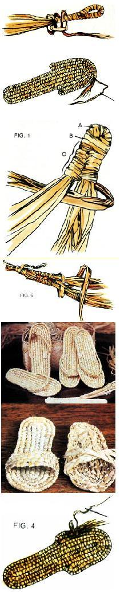
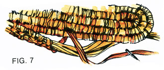
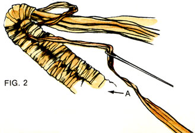

This natural fiber project produces summer wear that's like a "footnote" to human history!
Fiber sandals may be as close to a timeless, universal form of footwear as we're ever likely to encounter. And though inexpensive ones can be easily purchased in most areas of the country, you may find it rewarding to craft your own with raffia or bulrushes (or a combination of both fibers).
Raffia fiber, from a Madagascar palm tree (Raphia ruffia), is sold in bundles, ready for use, at most craft supply stores. Pliable, soft, and surprisingly strong, the long beige strips are used to wrap, lash, knot, or sew together the elements in many natural fiber projects-from hats and slippers to household furnishings.
Bulrushes are cattails-those tall, graceful reedy plants with brown flower heads that look like fuzzy hot dogs. Only the leaves are used for fiber crafts. Look for cattails near the edges of ponds, in roadside drainage ditches, and in marshes. Once you've located a good stand, cut the long, flexible leaves close to the ground, leaving the flower stalks and any shoots under 2 feet tall.
Fresh, green bulrushes can be made into handcrafted items if they are used right away-they mold when left in bunches. However, drying the leaves will prevent this from happening and will also turn them an attractive pale tan. Before dried bulrushes are used for weaving, they must be soaked in warm water for 5-10 minutes to make them pliable again. Both the fresh leaves and the dried and soaked ones should be tightly wrapped or woven, since they shrink as they dry, which could result in too loose a weave.
To make the split-toe sandals described below, you'll need one package of raffia (12 ounces or so), a large, blunt-tipped yarn needle-preferably made of steel-scissors, and several strong spring-clip clothespins. If you want to make one of the variations using bulrushes as well as raffia, you'll also need a bundle of fresh or dried cattail leaves. (Fiber sandals can be made entirely of bulrushes, but unless otherwise indicated, the following directions specify raffia.)
Different styles of footwear can be fashioned using a basic sole. You start with a bundle, or core, of fiber strips, and wrap them tightly together with another strip to form a rod. A series of rods connected end to end is coiled around a central double rod to form the shape of the sole. The rods are wrapped, coiled, and lashed together with a single strand called a weaver. Because the size and quality of the materials may differ significantly from one brand of raffia to another, it may take from ten to fifteen strands of fiber to make a rod 3/8" in diameter-sufficient for a comfortably thick sole. Sometimes two or three strips must be combined to make a weaver.
Prepare the raffia by trimming any hard ends from the strips, and set aside a handful of especially wide and pliable strands to use as weavers. Bundle together enough of the other strips to make a suitably thick core, and trim their ends. Bend the core 8" from one end, and wrap the bend with a weaver (Fig. 1-A), securing the end of the weaver under the wrappings as you go. Now, with the 8" length alongside the longer piece, wrap tightly around the folded end several times with the weaver (Fig. 1-B). Bind the 8" piece to the other one using a figure-8 wrap (Fig. 1-C).
When you reach the end of the 8" section, wrap several times around its tip, and then secure that end to the longer piece with a few tight wraps. Bend the free strands of the long section around the tip of the 8" rod, firmly wrapping the fibers of the bend as you do so. You now have an 8"-long double rod, and from this point on, you'll use the figure-8 lashing technique shown in Fig. 2 to coil core materials around this central rod. You'll need to thread the weaver onto a blunt-tipped yarn needle in order to accomplish this lashing.
Somewhere along the line you'll run out of weaver. When there's about 2" left, clamp the strand to the rod with a clothespin while you select another weaver from the ones you set aside earlier. Lay the new piece over the rod and alongside the old strand, leaving a 2" tail. Continue wrapping or lashing as before, but wrap over the tails of the old and new weavers as you go, to secure them in place.
Eventually you'll run out of core materials, too. When you've got about 2" left, clamp everything together with a clothespin while you make up another bundle of the same size. Add it to the existing core, allowing about 2" of overlap. Tapering the ends will prevent a clumpy effect where the two bundles join. Use a round-and-round wrap over the cut ends, then continue lashing the new bundle to the sole.
Weave on, tying each new row to the last, until you have six rows, three on each side of the center groove. It's now time to enlarge the sole to accommodate the wide part of your foot. To do this, lash the seventh coil to about one-third of the way down the sole from the toe. Now, bend the rod back on itself and begin lashing it in the opposite direction (Fig. 3). If you want to make right and left (rather than "either foot") sandals, continue weaving around the sole until it's wide enough for your foot (reverse the shaping for the opposite foot). If you prefer, you can bend the rod back on itself again when you reach the same spot on the other side of the sandal (Fig. 3); this will make the sole more or less symmetrical.
Try to finish the sale so that the end of the rod is unobtrusive. Tapering the rod into a curve looks good (Fig. 4). To do so, cut the bundle's end on a slant; then at the point just before the taper, lash the bundle down firmly with figure-8 and round-and-round wrapping. Finally, use round-and-round to bind the remainder of the bundle-the tapered ends-to the sole. The weaver can be inserted between these wrappings, then woven in . and out of the rods to secure it in place.
In the left-hand photo, each sandal has a looped thong between the toes and a band that runs through the loop and across the foot. To make the loop, bundle about eight strips of raffia. Wrap a 1-1/2"- to 2"-long portion of the bundle into a narrow rod, then bind its two ends together to make the loop. Secure the weaver with several half hitches (Fig. 5), and tie together several of the core's dangling ends as extra protection against the possibility of the loop's pulling apart. Place your foot on the sandal sole and choose the spot for the loop-this most likely will be in the second groove (left or right depending on the foot) from the center groove. With the yarn needle or a small, strong latch hook, draw the dangling ends of the loop through the coils and blend them in under the sole. Finally, thread the loose end of the weaver onto the needle and sew the loop firmly in place.
The band consists of two narrow cores of raffia (6-8 strips each) which have been lashed together far enough to allow the strap to go from midsole on one side, through the loop, and back to midsole on the other side-leaving the ends unwrapped. Use full-length raffia strips and trim them later to the desired length.
To begin fashioning the band, select a long, strong weaver, and, leaving a tail about 10"-12" long, wrap the weaver around the tips of the two bundles at one end, binding them firmly together. With the figure-8 knotting technique (Fig. 6), lash the two bundles together into a double rod; after you've made 15 to 20 knots, start pulling them along the rods until the knots have been stretched approximately I" apart but are still holding the rods together. Slide the band through the toe loop and try on the sandal. Find the place on either side of the sole where the band should be fastened for the greatest comfort. Clamp one end of the knotted section to the sole at one fastening point. Wrap the weaver tightly around the two rods at the far end of the band at its fastening point-thus finishing off the knotted section-and clothespin it in place.
Choose one end of the band and begin wrapping the loose strands of raffia to the underside of the sole's outermost coil (Fig. 7).
Use the wraparound technique so that the strands are blended in. Continue until you reach midheel, then taper the strands and finish off the wrapping as you did when finishing the sole. Repeat this procedure with the other end of the band . . . and that completes your splittoe sandal.
Cattail leaves lend themselves to designs that require flat, firm strips, such as woven or braided bands. An attractive scuff sandal can be made by attaching a wide band of woven bulrush strips to the basic sole. Four or five strips can be pushed down between the lashed coils on the outside edge of the sole and woven into the underside of the sandal. Another cattail blade is then used to weave back and forth across the strips to make the band (secure its ends as you would the cross strips).
Still another variation is the braided sandal. Here the sole is crafted from a braided length of cattail strips which is coiled into an oval shape and sewn together with a raffia weaver in the same fashion as a braided rug. One less coil around the heel than the toe section will give some shape to the sole. Two strips of braided cattails are then crisscrossed over the front of the sandal. Their ends are folded under the sole and sewn-with strong raffia-to the bottom of the sandal
Like any handcraft, wrapping sandals takes time, and unless you forage for your own materials or receive some as a gift, it's not going to save you a whole lot of money, either. But it's fun! It's no more difficult than knitting or crocheting, sewing, or tying a net. And it's definitely rewarding, not onlv in terms of the product and the personal accomplishment, but for the sheer joy of being able to say, "How am I doing? Why, I'm standing on my own now!'
Since some of you will undoubtedly be unable to locate a supply of cattails, MOTHER's project tester decided to try using cornhusks as a substitute. They proved annoyingly short but otherwise were adequate for making wrapped coils. Dried cornhusks are sold in many craft outlets; between 6" and 9" long and fanning out to perhaps 10" wide, they must be soaked in warm water before use (hair conditioner added to the water gives extra pliability). Like cattails, cornhusks shrink as they dry, and they will hold the form into which they've been shaped, which is often an advantage.
The rolled husks can be tucked into one another, end to end, to simulate a long strip, and they will not pull apart if they are well wrapped at the junctures. Strips must be torn from the husks to make weavers. Since these are fairly short, they will have to be joined together frequently; however, they make a smooth, attractive wrapping.
An awl, used carefully, is helpful in forcing an opening between the lashed rods through which a shuck strip can be inserted, as when making a woven-band slipper. The strip can then be pulled up between the inner coils of the sole and woven in.
|
 |
 |
 |